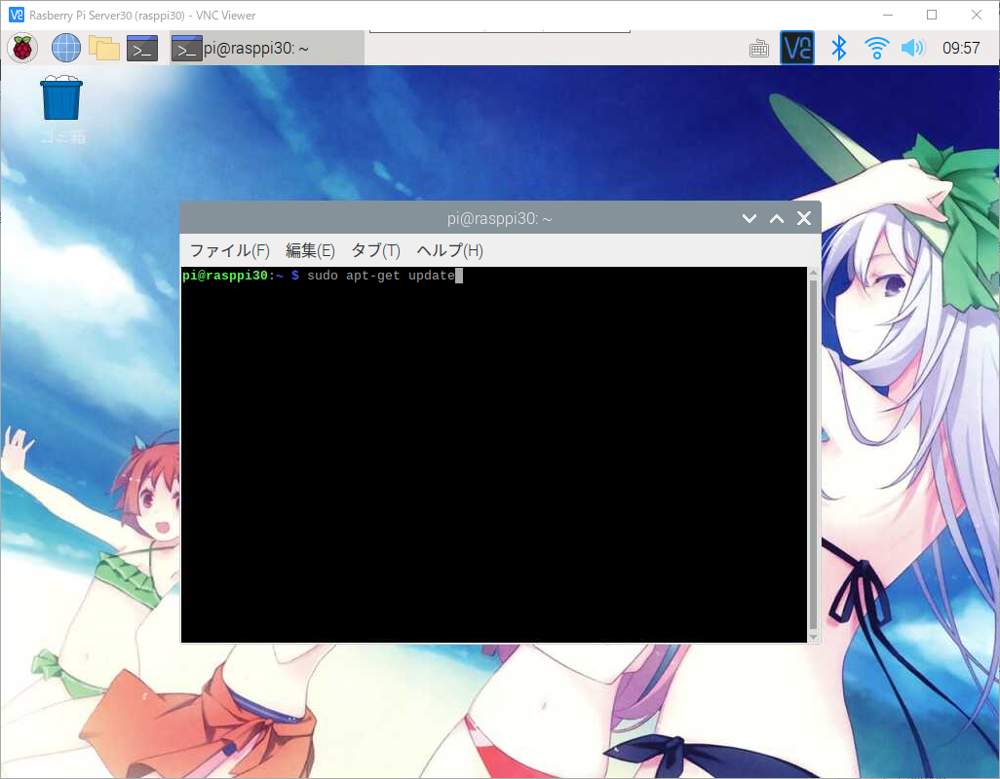
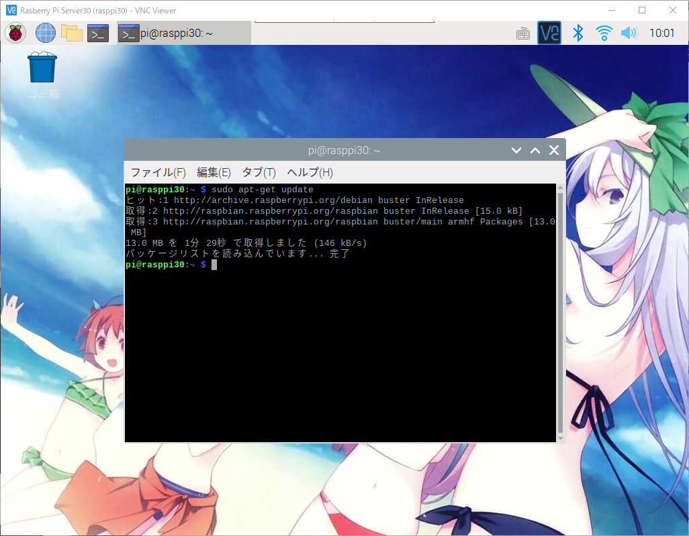
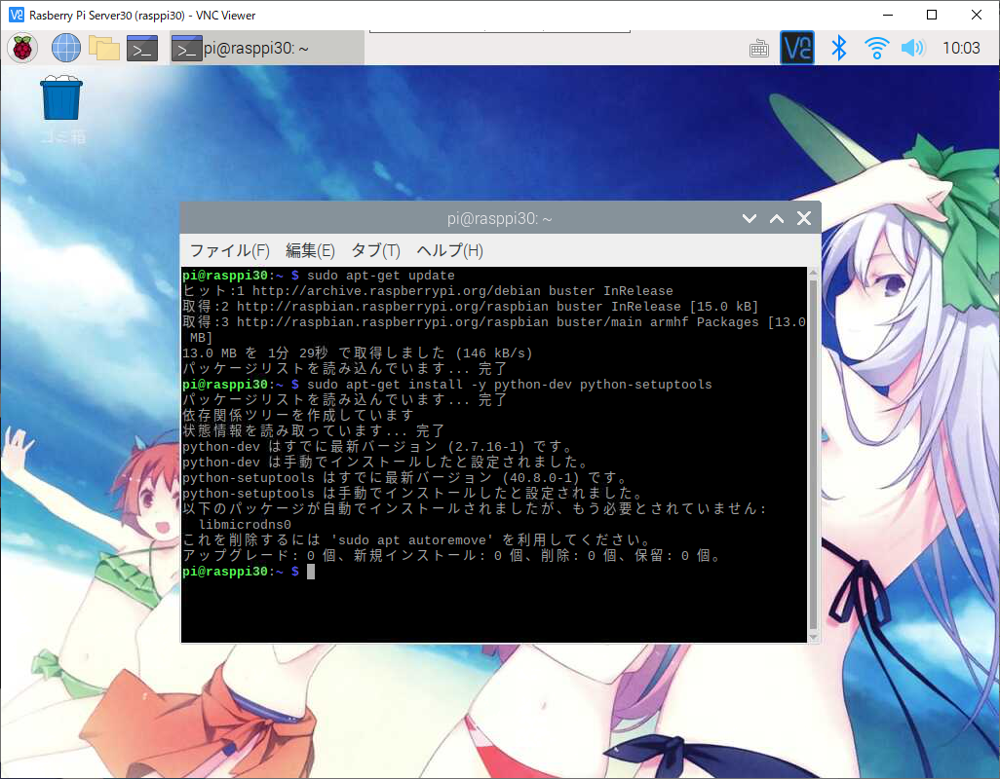

라즈베리파이에서 파이썬을 이용한 GPIO 개발 준비
일단 라즈베리파이에 VNC로 접속후 터미널을 실행 합니다.
터미널에서 아래의 명령어를 실행 합니다.

최신버전으로 업데이트를 하게 됩니다.

파이썬을 설치하기 위해 아래의 명령어를 입력합니다.
1
| $ sudo apt-get install -y python-dev python-setuptools
|

설치가 완료 되었습니다.
이렇게해서 라즈베리파이에서 파이썬을 사용할수 있는 준비가 되었습니다.
라즈베리파이 공식 사이트
https://www.raspberrypi.org/